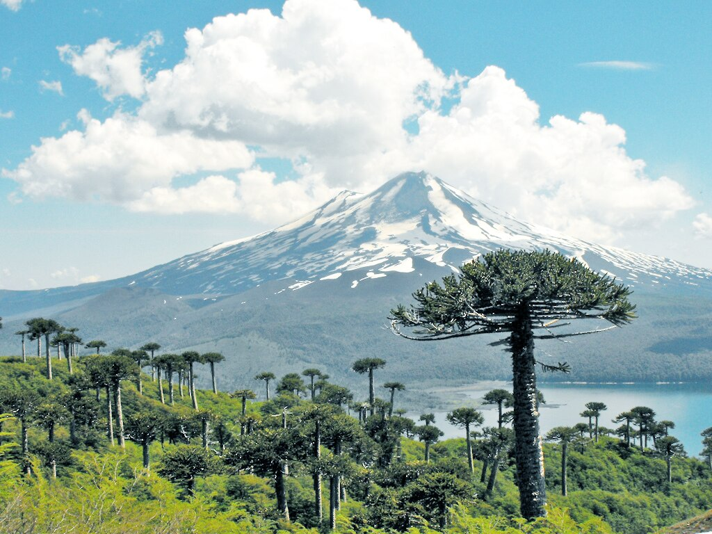
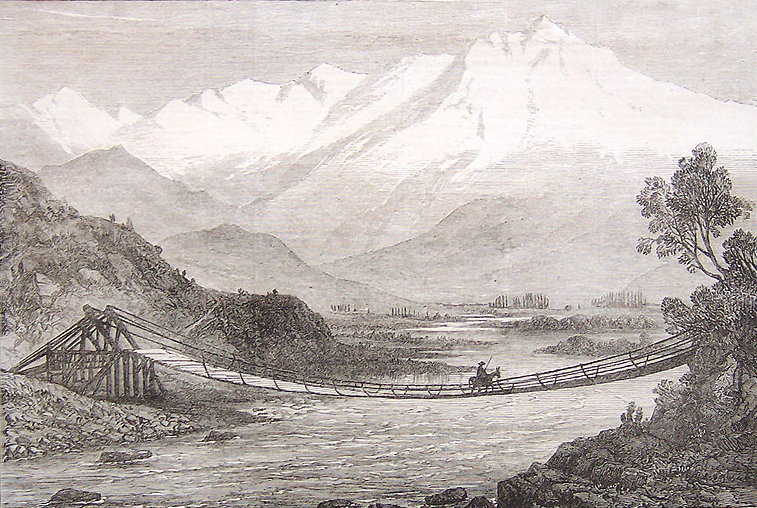
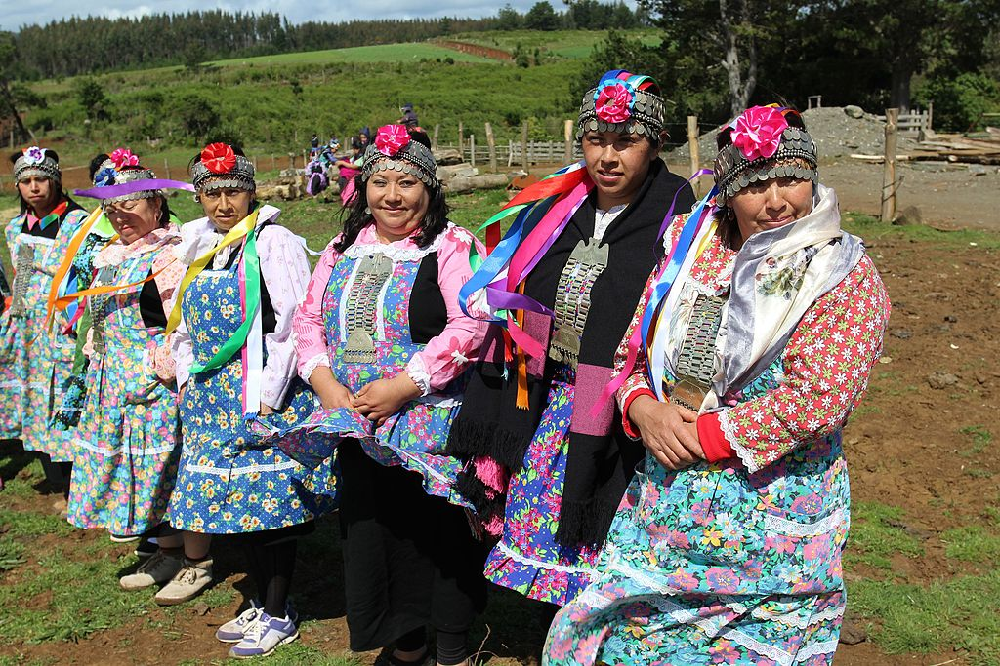

Parque nacional Conguillío en Melipeuco, Chile. Imagen de lautaroj. Wikimedia commons
En esta ocasión nos dirigimos a una comunidad que se encuentra en Sudamérica, entre Chile y Argentina. Nos referimos al pueblo Mapuche. ¿Habías oído hablar de ellos? En esta ocasión, nos referiremos a ellos para abordar dos temas relevantes en antropología: sociolingüística y etnicidad.
Nos transportamos a la época prehispánica, aproximadamente en el año 1500, en el territorio que hoy conocemos como Chile y Argentina. Observas el paisaje, donde la naturaleza virgen y los imponentes picos de los Andes abrazan las vidas de los Mapuche.
Te encuentras a algunos miembros de una comunidad Mapuche, su lengua es el “mapudungun” o “mapuzungún”, aprecias sus palabras que fluyen con una cadencia distintiva, la cual ha unido a este pueblo a lo largo de los siglos. Los Mapuche, con una profunda conexión con su tierra, han cultivado una lengua que refleja su relación con la naturaleza y sus valores fundamentales.

Valle de Aconcagua, región que era habitada por los Mapuche. Imagen de The Illustrated London News. Wikimedia Commons
En el corazón de esta comunidad, descubres los que han surgido naturalmente a lo largo de los años, algunos de estos grupos son: los ancianos, que relatan historias de tiempos inmemoriales, quienes hablan con sabiduría y respeto por las tradiciones; también encontramos a las madres, cuyas canciones de cuna han pasado de generación en generación, sus palabras son un lazo de amor que une a las familias y preserva la identidad.
En esta región de los Andes, también puedes encontrar otros grupos que habitan en la región y que hablan diferentes lenguas. A pesar de las diferencias lingüísticas, los mapuches han logrado establecer relaciones comerciales y sociales con estos grupos, los lugares donde realizan el intercambio social y comercial forman parte de los
¿Cuál es la diferencia entre espacios de habla y grupos de habla? Para que puedas comprender mejor estas diferencias, da clic a continuación.
Los amigos forman un grupo de habla ya que tienen una forma de comunicarse en particular que los distingue. Imagen de tonodiaz. Freepik
Pasan algunos años y los españoles llegan a América del Sur en 1540 y comienzan a colonizar las tierras mapuches. Observas que con la llegada de los españoles, se produce un cambio significativo en la dinámica lingüística de la región, ya que imponen su lengua y cultura a los mapuches, lo que resulta en una pérdida gradual del uso del mapudungun. Sin embargo, los mapuches se resisten creando un espacio donde podían comunicarse sin ser entendidos por los conquistadores. Esta evolución marcó la creación de un nuevo espacio de habla, cargado de significado y resistencia.
Ahora llegamos al siglo XXI, donde a pesar de la imposición española, los mapuches han logrado mantener su lengua y cultura hasta el día de hoy. Hoy en día, el mapudungun es reconocido como una lengua oficial en Chile y se ha convertido en un símbolo de la identidad cultural mapuche.
Te percatas que pese a que han resistido a los embates de la globalización y colonización lingüística, preservando su lengua, también realizan procesos de adaptación tanto en la lengua como en su cultura. Por ejemplo, pueden hablar igualmente el español para comunicarse con los comerciantes o turistas, sin que por ello abandonen sus rasgos culturales, también pueden seguir vistiendo sus ropas típicas, pero usan tenis provenientes de otros contextos sociales. Todo esto resalta que los mapuches aplican estrategias flexibles para adaptarse al contexto globalizado.
En la actualidad, ¿cuántas personas hablan mapudungun? La lengua mapudungun es altamente compleja, a pesar de que entre Argentina y Chile hay una población estimada de 1 millón 800 mil mapuches, sólo entre 100 mil y 250 mil personas lo hablan correctamente (Paúl, 2021).
La lengua mapuche también ha afectado al español, ya que tanto argentinos como chilenos han adoptado palabras de esta lengua, como “funa”, “cahuín” o “poncho”.
¿Habías escuchado alguna de estas palabras anteriormente? Es probable que hayas utilizado (o al menos escuchado) el término “funar”, que actualmente significa manifestación o repudio público contra una persona y que en lengua mapuche significa algo podrido o que se echa a perder. La palabra “poncho”, también es conocida en México y significa prenda de abrigo cuadrada, con una abertura en el centro (Paúl, 2021). ¡Interesante!, ¿no te parece? Las lenguas indígenas mexicanas también han afectado al español, nosotros seguimos utilizando palabras como aguacate, papalote, atlalilco, chapulín, ¿qué otras palabras recuerdas tú que vienen de lenguas indígenas?
Te das cuenta que el idioma mapudungun, aunque lucha por sobrevivir ante la dominación del español, ha encontrado un aliado en el mundo digital, las redes sociales y la tecnología han dado a los jóvenes Mapuche un espacio global para compartir sus voces y defender su patrimonio lingüístico y cultural. ¿Te gustaría saber cómo se escucha el mapuzungún? Prepárate para endulzar tus oídos con esta lengua con tradiciones ancestrales. Te invitamos a ver el siguiente video, da clic en la siguiente imagen para acceder a él, luego vuelve aquí para continuar.
Con todo lo que hemos visto hasta el momento, seguramente te has dado cuenta que los grupos y espacios de habla son moldeados por la historia, las luchas y la globalización los cuales han sido los cimientos de la identidad cultural del pueblo Mapuche. Todo esto forma parte de lo que estudia la .
En esta ocasión, llegamos a los años 1540, en los Andes, cuando los Mapuche se enfrentan a la llegada de los colonizadores españoles, un encuentro que comienza a dar forma a las dinámicas étnicas de la región. Te hallas en medio de un encuentro, un intercambio cultural, en el que los españoles con sus creencias y modos de vida, colisionan con la rica tradición y cosmovisión Mapuche, un de esta tierra.

Mujeres mapuche. Imagen de Ministerio Bienes Nacionales. Wikimedia Commons
Observas que estos primeros encuentros entre estas culturas traen consigo una fusión de lo antiguo y lo nuevo, por ejemplo, la religión y las prácticas espirituales Mapuche se entrelazan con las creencias católicas impuestas por los colonizadores. También, te percatas de cómo el pueblo mapuche se resiste y se adapta, tejiendo una red compleja de identidad étnica que abraza tanto su herencia como las nuevas realidades. Esto último hace referencia a la
¿Recuerdas qué es la identidad? ¡Correcto!, la identidad es el sentido de quiénes somos, cómo nos vemos y cómo nos percibimos en el contexto de las diferentes interacciones sociales y culturales en las que participamos. Ésta resulta de la interiorización selectiva, distintiva y contrastiva de valores y pautas de significados por parte de individuos y grupos del contexto en el que se desarrollan, por lo tanto, la identidad no es estática; puede ser dinámica y moldeada por el entorno y las interacciones sociales (Giménez, 2021).
Puedes apreciar que la llegada de los españoles, ha traído consigo la formación de , ya que algunos españoles se han quedado a vivir en esta región y permitieron el mestizaje entre los distintos pueblos que habitan en Argentina y Chile, así como de los Mapuche con los españoles.
Te das cuenta que los nuevos pueblos traen consigo sus propias tradiciones y lenguas, creando un mosaico diverso de culturas. Te sumerges en la interacción entre los Mapuche y estos nuevos grupos, observando cómo las fronteras étnicas se vuelven más difusas, y cómo la etnicidad se entrelaza con la historia de la migración y la identidad en constante cambio.
Conforme avanza el tiempo, observas cómo la sociedad chileno-argentina evoluciona, llevando a los Mapuche a un nuevo papel en un mundo cambiante. Los patrones de la etnicidad se transforman, ya que los Mapuche se encuentran en la encrucijada entre preservar sus tradiciones y asimilarse a las estructuras gubernamentales y sociales impuestas, todo esto resulta en una pérdida gradual de la identidad cultural mapuche.
Ahora nos desplazamos a la actualidad, donde las complejas dinámicas étnicas que presenciaste en las épocas pasadas siguen influyendo en la región. Ves con gusto que los Mapuche continúan luchando por el reconocimiento de sus derechos y la preservación de su identidad única en una sociedad moderna en constante evolución.
Vamos a adentrarnos un poco más en esta comunidad y observamos cómo se resisten los mapuches a la desaparición de su cultura. Da clic en la siguiente imagen para ver un video donde la propia comunidad mapuche, te cuenta cómo defienden su tierra y tradiciones. Luego vuelve aquí para continuar.
Te enteras que hoy en día, los mapuches son reconocidos como un pueblo originario, que su lengua es reconocida como oficial en Chile, además, se han convertido en un símbolo de la identidad cultural sudamericana.
Con todo lo que has visto y vivido hasta ahora, ahora puedes comprender mejor que la llegada de pueblos nuevos y la interacción con ellos han dado forma a su identidad, a veces desafiando y otras veces enriqueciendo su herencia ancestral. Te puedes llevar contigo estas lecciones, sabiendo que la comprensión de la etnicidad es esencial para apreciar la complejidad de la experiencia humana y la manera en que los pueblos se entrelazan a lo largo del tiempo.
Estamos seguros que estos temas han dejado huella en ti, así que comprueba todo lo que aprendiste con el siguiente ejercicio.
Seguramente te fue increíble en el ejercicio. Para concluir con este tema, queremos que reflexiones sobre la forma en que podemos preservar nuestra cultura.
Pasemos a la última parte de esta unidad.